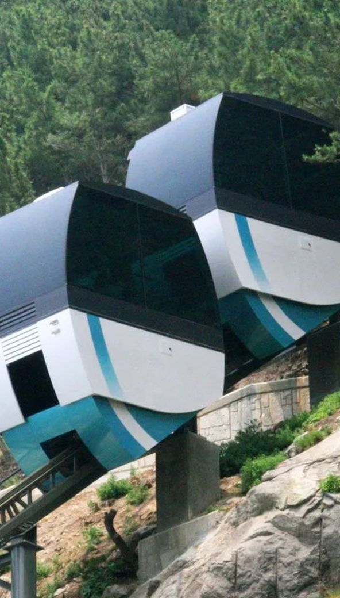
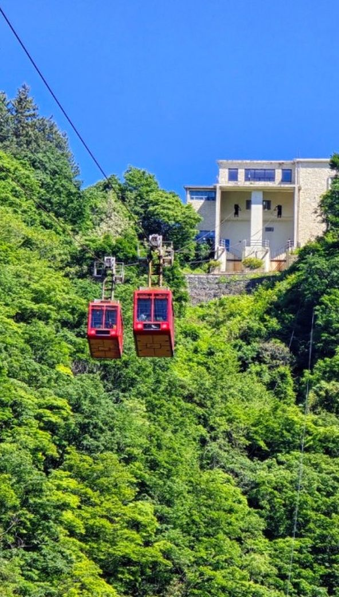
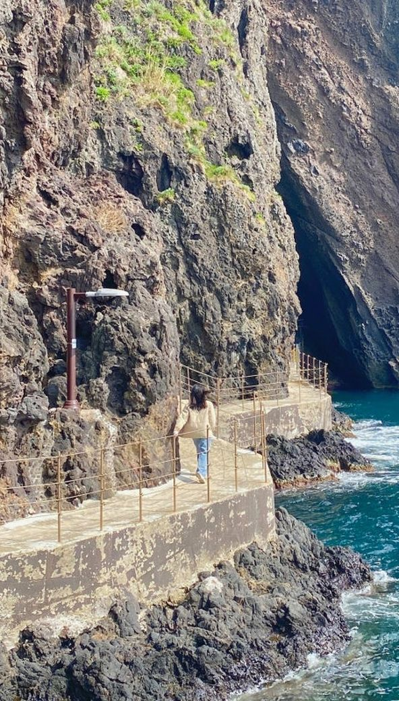
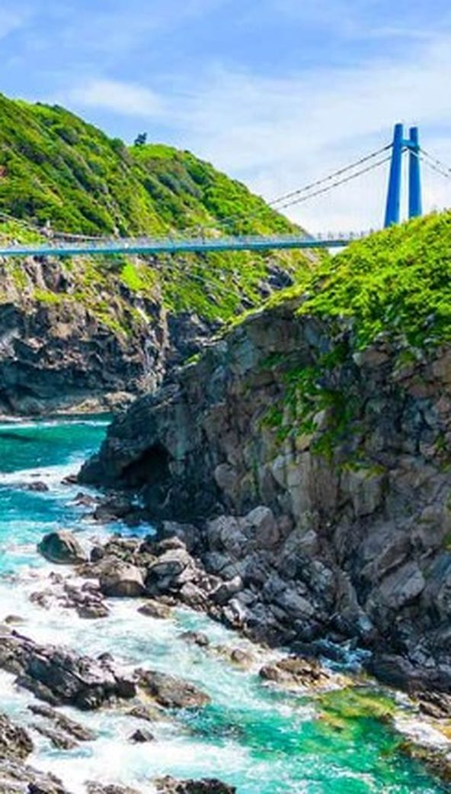
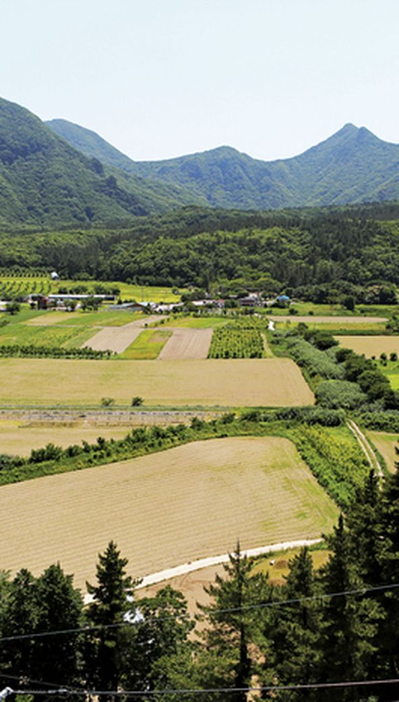
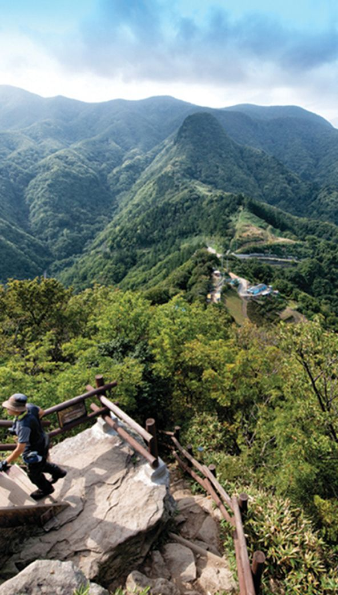
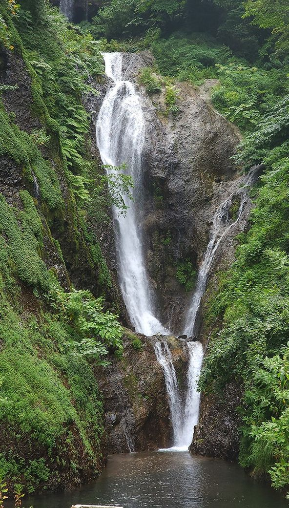
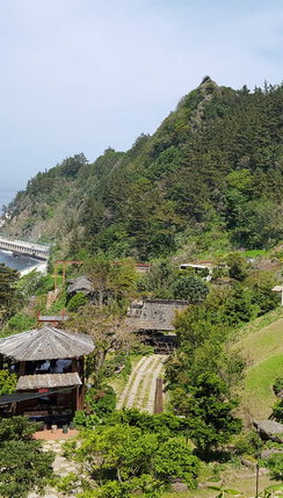
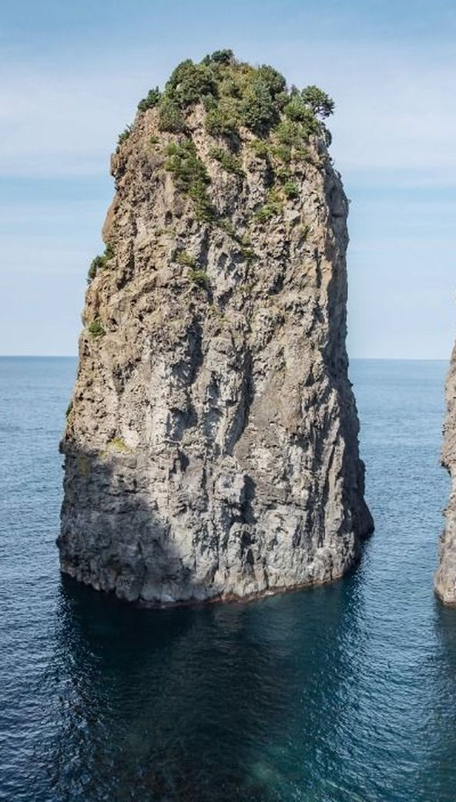
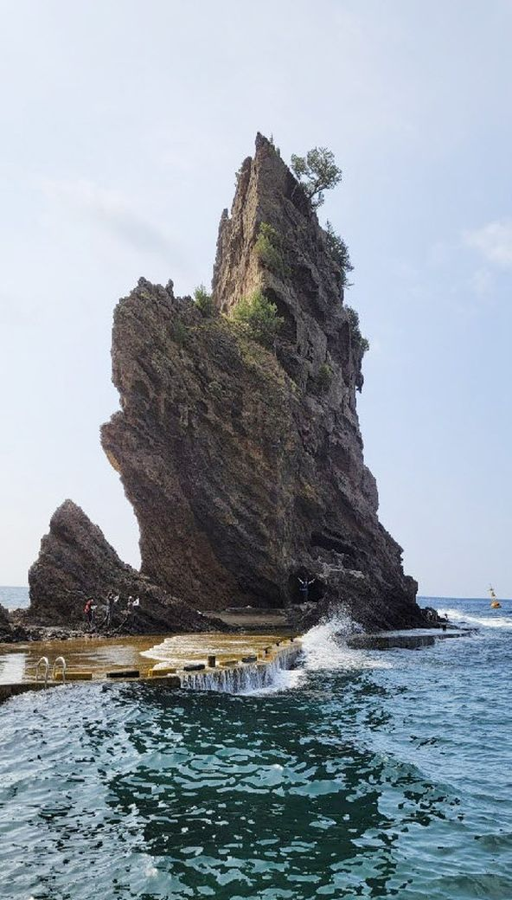

대표 명소부터 독도까지 — 울릉도에서 꼭 봐야 할 곳들을 모았습니다.

모노레일로 오른 뒤 스카이워크에서 대풍감 절경을 한눈에. 울릉도 필수 코스.

케이블카로 오르는 전망대. 맑은 날엔 독도가 보입니다.

절벽 해안선을 따라 걷는 국내 최고 수준의 해안 산책로.

연도교를 건너 만나는 무인도. 원시 자연이 그대로.

울릉도 유일의 평지. 울릉국화·섬백리향 군락지와 산채 요리의 본고장.

울릉도 최고봉(984m). 정상에서 섬 전체와 동해가 한눈에.

3단으로 떨어지는 폭포와 천연 에어컨 '풍혈'.

절벽 위 식물원. 파노라마 바다 전망이 일품. 입장 5,000원.

세 선녀의 전설이 깃든 기암. 북면 해안도로 하이라이트.

거북이 모양 바위와 향나무 자생지(천연기념물).
저동항에서 배로 20분, 더덕의 섬. 나선형 계단이 명물.
독도의 역사와 자료를 한자리에. 케이블카 타는 약수공원 안에 있어요.
저동항 등에서 출발하는 독도 여객선을 이용해요. 왕복 3~4시간 일정이며, 사전 예매가 필요합니다.
기상이 좋으면 접안해 약 20~30분간 독도 땅을 밟을 수 있어요. 파도가 높으면 배 위에서 선회 관람으로 대체됩니다.
신분증 지참 필수, 멀미약 권장. 접안 성공률이 높지 않으니 일정 중반에 배치하고 예비일을 두세요.